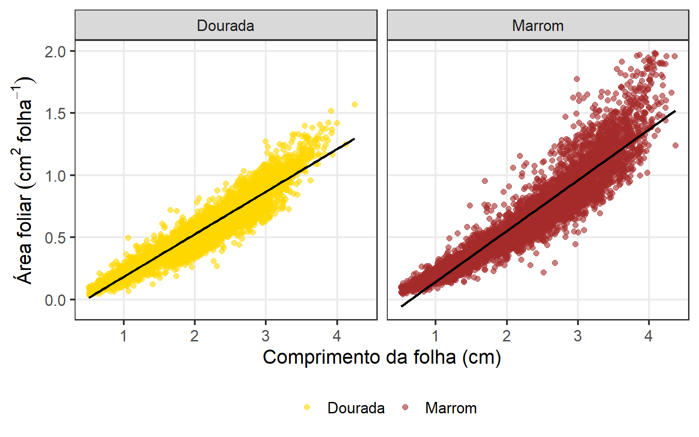
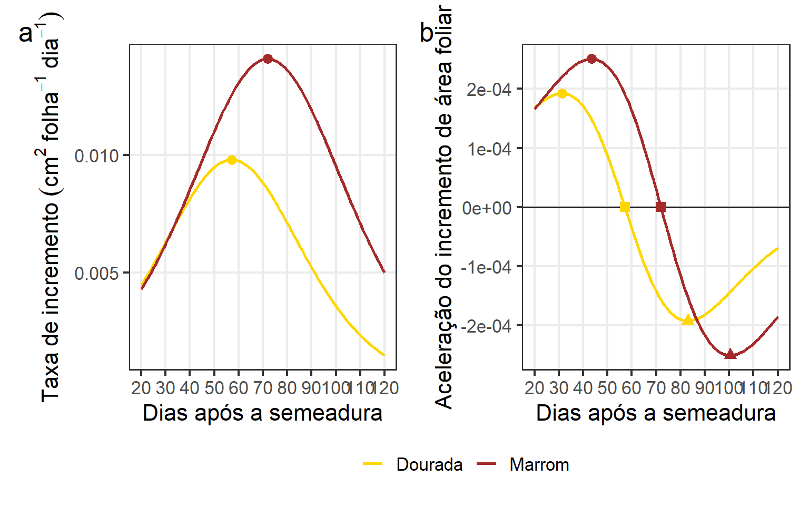

O modelo logístico e seus pontos críticos sugerem diferença no padrão de expansão foliar de cultivares de linho
1 Pacotes
library(rio)
library(tidyverse)
library(metan)
library(broom)
library(nlme)
library(rpanel)
library(hydroGOF)
my_theme <-
theme_bw(base_size = 16) +
theme(
panel.grid.minor = element_blank(), #remove minor gridlines
legend.position = "bottom",
legend.title = element_blank()
)2 Dados
df <- import("data/area_foliar.xlsx")
df_ap <- import("data/df_ap.xlsx")3 Computar estatísticas
df_filter <-
df |>
filter(between(length, 0.5, 4.5),
area < 2,
width < 0.75,
radius_ratio < 25)
# criar as médias
df_nlm <-
df_filter |>
group_by(data, das, bloco, cultivar, planta) |>
summarise(n = n(),
area_media = mean(area),
comp_medio = mean(length)) |>
left_join(df_ap) |>
mutate(das = as.numeric(das)) |>
ungroup()
# média cultivar das
df_modelos <-
df_nlm |>
means_by(das, cultivar) |>
mutate(das = as.numeric(das))
df_grouped <-
groupedData(formula = area_media ~ das|cultivar,
data = df_nlm,
order.groups = FALSE)4 Relação af x comprimento
ggplot(df_filter, aes(length, area)) +
geom_point(aes(color = cultivar), size = 2, alpha = 0.6) +
geom_smooth(method = "lm", color = "black") +
facet_wrap(~cultivar) +
scale_color_manual(values = c("gold", "brown")) +
labs(x = "Comprimento da folha (cm)",
y = expression(Área~foliar~(cm^2~folha^{-1}))) +
my_theme 
df_filter |>
group_by(cultivar) |>
filter(length > 1.5 & length > 4) |>
summarise(n = n())ggsave("figs/relacao_af_cf.png", width = 8, height = 4)4.1 Chutes iniciais
source("https://raw.githubusercontent.com/walmes/wzRfun/master/R/rp.nls.R")
model <- area_media ~ b1/(1 + exp(b2 - b3 * das))
start <- list(b1 = c(init = 20, from = 20, to = 200),
b2 = c(init = 1, from = 1, to = 20),
b3 = c(init = 0.01, from = 0, to = 0.2))
par_mvr <- rp.nls(model = model,
data = df_nlm |> as.data.frame(),
start = start)4.2 Full model
# full model
full <-
nls(area_media ~ b1/(1 + exp(b2 - b3 * das)),
data = df_nlm,
start = c(b1 = 3,
b2 = 3,
b3 = 0.05))4.3 Efeito aleatório de cultivar no parâmetro b1
mix_b1 <-
nlme(area_media ~ b1/(1 + exp(b2 - b3 * das)),
method = "ML",
data = df_grouped,
fixed = b1 + b2 + b3 ~ 1,
random = b1 ~ 1,
start = c(b1 = 120,
b2 = 3,
b3 = 0.05))
summary(mix_b1)
## Nonlinear mixed-effects model fit by maximum likelihood
## Model: area_media ~ b1/(1 + exp(b2 - b3 * das))
## Data: df_grouped
## AIC BIC logLik
## -136.1721 -121.323 73.08603
##
## Random effects:
## Formula: b1 ~ 1 | cultivar
## b1 Residual
## StdDev: 0.1158944 0.142903
##
## Fixed effects: b1 + b2 + b3 ~ 1
## Value Std.Error DF t-value p-value
## b1 0.9950295 0.12067119 140 8.245792 0
## b2 3.1201370 0.27081513 140 11.521280 0
## b3 0.0472156 0.00655179 140 7.206526 0
## Correlation:
## b1 b2
## b2 -0.425
## b3 -0.634 0.890
##
## Standardized Within-Group Residuals:
## Min Q1 Med Q3 Max
## -2.228931790 -0.630440936 0.003410454 0.548613642 5.041493218
##
## Number of Observations: 144
## Number of Groups: 2
ranef(mix_b1)anova(mix_b1, full)4.4 Efeito aleatório de cultivar no parâmetro b2
mix_b2 <-
nlme(area_media ~ b1/(1 + exp(b2 - b3 * das)),
method = "ML",
data = df_grouped,
fixed = b1 + b2 + b3 ~ 1,
random = b2 ~ 1,
start = c(b1 = 120,
b2 = 3,
b3 = 0.05))
summary(mix_b2)
## Nonlinear mixed-effects model fit by maximum likelihood
## Model: area_media ~ b1/(1 + exp(b2 - b3 * das))
## Data: df_grouped
## AIC BIC logLik
## -123.1027 -108.2536 66.55135
##
## Random effects:
## Formula: b2 ~ 1 | cultivar
## b2 Residual
## StdDev: 0.1940472 0.1500125
##
## Fixed effects: b1 + b2 + b3 ~ 1
## Value Std.Error DF t-value p-value
## b1 1.3193041 0.2551552 140 5.170595 0
## b2 2.8130457 0.2179320 140 12.907905 0
## b3 0.0338346 0.0056865 140 5.949989 0
## Correlation:
## b1 b2
## b2 -0.067
## b3 -0.924 0.344
##
## Standardized Within-Group Residuals:
## Min Q1 Med Q3 Max
## -2.46161441 -0.62584757 -0.02871953 0.44911882 5.08072170
##
## Number of Observations: 144
## Number of Groups: 2
ranef(mix_b2)anova(mix_b2,full)4.5 Efeito aleatório de cultivar no parâmetro b3
mix_b3 <-
nlme(area_media ~ b1/(1 + exp(b2 - b3 * das)),
method = "ML",
data = df_grouped,
fixed = b1 + b2 + b3 ~ 1,
random = b3 ~ 1,
start = c(b1 = 120,
b2 = 3,
b3 = 0.05))
summary(mix_b3)
## Nonlinear mixed-effects model fit by maximum likelihood
## Model: area_media ~ b1/(1 + exp(b2 - b3 * das))
## Data: df_grouped
## AIC BIC logLik
## -130.7399 -115.8908 70.36995
##
## Random effects:
## Formula: b3 ~ 1 | cultivar
## b3 Residual
## StdDev: 0.003097206 0.1456966
##
## Fixed effects: b1 + b2 + b3 ~ 1
## Value Std.Error DF t-value p-value
## b1 1.2981502 0.21218673 140 6.117961 0
## b2 2.8083196 0.16656919 140 16.859778 0
## b3 0.0342614 0.00562564 140 6.090216 0
## Correlation:
## b1 b2
## b2 -0.142
## b3 -0.836 0.483
##
## Standardized Within-Group Residuals:
## Min Q1 Med Q3 Max
## -2.30225688 -0.66471581 -0.04546572 0.49686292 5.04913616
##
## Number of Observations: 144
## Number of Groups: 2
ranef(mix_b3)anova(mix_b3,full)4.6 Modelo ajustado
formula <- area_media ~ b1/(1 + exp(b2 - b3 * das))
start_af = c(b1 = 50,
b2 = 3,
b3 = 0.05)
mod_af <-
df_modelos |>
group_by(cultivar) |>
doo(~nls(formula,
data = .,
start = start_af))
parameters <-
mod_af |>
mutate(data = map(data, ~.x |> tidy())) |>
unnest(data) |>
dplyr::select(cultivar, term, estimate) |>
pivot_wider(names_from = term,
values_from = estimate)
plot_af <-
ggplot(df_nlm, aes(das, area_media)) +
geom_smooth(method = "nls",
method.args = list(formula = y ~ b1/(1 + exp(b2 - b3 * x)),
start = start_af),
se = FALSE,
aes(color = cultivar)) +
stat_summary(fun = mean,
geom = "point",
aes(color = cultivar),
size = 3,
position = position_dodge(width = 0.8)) +
scale_x_continuous(breaks = seq(20, 120, by = 10)) +
labs(x = "Dias após a semeadura",
y = expression(Área~foliar~média~(cm^2~folha^{-1}))) +
my_theme +
scale_color_manual(values = c("gold", "brown"))
ggsave("figs/curva_area_media.png", width = 8, height = 5)4.7 Qualidade de ajuste
get_r2 <- function(model){
aic <- AIC(model)
fit <- model$m$fitted()
res <- model$m$resid()
obs <- fit + res
gof <- gof(obs, fit, digits = 4)
r2 <- gof[which(rownames(gof) == "R2")]
data.frame(aic = aic, r2 = r2)
}
qualidade <-
mod_af |>
mutate(map_dfr(.x = data,
.f = ~get_r2(.))) |>
select(-data)4.8 Primeira derivada
# primeira derivada
D(expression(b1/(1 + exp(b2 - b3 * das))), "das")
## b1 * (exp(b2 - b3 * das) * b3)/(1 + exp(b2 - b3 * das))^2
dy <- function(x,b1,b2,b3){
b1 * (exp(b2 - b3 * x) * b3)/(1 + exp(b2 - b3 * x))^2
}
parameters <-
parameters |>
mutate(xpi = b2 / b3,
ypi = dy(xpi, b1, b2, b3))
plot_pi <-
ggplot() +
stat_function(fun = dy,
aes(color = "Dourada"),
size = 1,
xlim = c(20, 120),
args = c(b1 = parameters[[1, 2]],
b2 = parameters[[1, 3]],
b3 = parameters[[1, 4]])) +
stat_function(fun = dy,
aes(color = "Marrom"),
size = 1,
xlim = c(20, 120),
args = c(b1 = parameters[[2, 2]],
b2 = parameters[[2, 3]],
b3 = parameters[[2, 4]])) +
geom_point(aes(xpi, ypi, color = cultivar),
data = parameters,
size = 3,
show.legend = FALSE) +
scale_x_continuous(breaks = seq(20, 120, by = 10)) +
labs(x = "Dias após a semeadura",
y = expression(Taxa~de~incremento~(cm^2~folha^{-1}~dia^{-1}))) +
my_theme +
scale_color_manual(values = c("gold", "brown"))4.9 Segunda derivada
# segunda derivada
D(expression(b1 * (exp(b2 - b3 * x) * b3)/(1 + exp(b2 - b3 * x))^2), "x")
## -(b1 * (exp(b2 - b3 * x) * b3 * b3)/(1 + exp(b2 - b3 * x))^2 -
## b1 * (exp(b2 - b3 * x) * b3) * (2 * (exp(b2 - b3 * x) * b3 *
## (1 + exp(b2 - b3 * x))))/((1 + exp(b2 - b3 * x))^2)^2)
d2y <- function(x,b1,b2,b3){
-(b1 * (exp(b2 - b3 * x) * b3 * b3)/(1 + exp(b2 - b3 * x))^2 -
b1 * (exp(b2 - b3 * x) * b3) *
(2 * (exp(b2 - b3 * x) * b3 *
(1 + exp(b2 - b3 * x))))/((1 + exp(b2 - b3 * x))^2)^2)
}
parameters <-
parameters |>
mutate(xmap = (b2 - 1.3170)/b3,
xmdp = (b2 + 1.3170)/b3,
ymap = d2y(xmap, b1, b2, b3),
ymdp = d2y(xmdp, b1, b2, b3),
)|>
left_join(qualidade)
export(parameters, "data/parametros_afmedia.xlsx")
df_acel <-
ggplot() +
geom_hline(yintercept = 0) +
stat_function(fun = d2y,
aes(color = "Dourada"),
size = 1,
xlim = c(20, 120),
args = c(b1 = parameters[[1, 2]],
b2 = parameters[[1, 3]],
b3 = parameters[[1, 4]])) +
stat_function(fun = d2y,
aes(color = "Marrom"),
size = 1,
xlim = c(20, 120),
args = c(b1 = parameters[[2, 2]],
b2 = parameters[[2, 3]],
b3 = parameters[[2, 4]])) +
geom_point(aes(xmap, ymap, color = cultivar),
data = parameters,
size = 3,
shape = 19,
show.legend = FALSE) +
geom_point(aes(xmdp, ymdp, color = cultivar),
data = parameters,
size = 3,
shape = 17,
show.legend = FALSE) +
geom_point(aes(xpi, 0, color = cultivar),
data = parameters,
size = 3,
shape = 15,
show.legend = FALSE) +
scale_x_continuous(breaks = seq(20, 120, by = 10)) +
labs(x = "Dias após a semeadura",
y = "Aceleração do incremento de área foliar") +
my_theme +
scale_color_manual(values = c("gold", "brown"))arrange_ggplot(plot_pi, df_acel,
tag_levels = "a",
guides = "collect")
ggsave("figs/pontos_criticos_afmedia.png", width = 10, height = 5)5 Section info
sessionInfo()
## R version 4.2.0 (2022-04-22 ucrt)
## Platform: x86_64-w64-mingw32/x64 (64-bit)
## Running under: Windows 10 x64 (build 22621)
##
## Matrix products: default
##
## locale:
## [1] LC_COLLATE=Portuguese_Brazil.utf8 LC_CTYPE=Portuguese_Brazil.utf8
## [3] LC_MONETARY=Portuguese_Brazil.utf8 LC_NUMERIC=C
## [5] LC_TIME=Portuguese_Brazil.utf8
##
## attached base packages:
## [1] tcltk stats graphics grDevices utils datasets methods
## [8] base
##
## other attached packages:
## [1] hydroGOF_0.4-0 rpanel_1.1-5.1 nlme_3.1-157 broom_1.0.1
## [5] metan_1.17.0.9000 MASS_7.3-58.1 lmtest_0.9-40 zoo_1.8-11
## [9] nlstools_2.0-0 car_3.1-1 carData_3.0-5 forcats_0.5.2
## [13] stringr_1.4.1 dplyr_1.0.10 purrr_0.3.5 readr_2.1.3
## [17] tidyr_1.2.1 tibble_3.1.8 ggplot2_3.4.0 tidyverse_1.3.2
## [21] rio_0.5.29 leaflet_2.1.1
##
## loaded via a namespace (and not attached):
## [1] minqa_1.2.5 googledrive_2.0.0 colorspace_2.0-3
## [4] ggsignif_0.6.4 ellipsis_0.3.2 class_7.3-20
## [7] fs_1.5.2 rstudioapi_0.14 proxy_0.4-27
## [10] ggpubr_0.4.0 farver_2.1.1 ggrepel_0.9.2
## [13] fansi_1.0.3 lubridate_1.9.0 mathjaxr_1.6-0
## [16] xml2_1.3.3 splines_4.2.0 cachem_1.0.6
## [19] knitr_1.40 polyclip_1.10-4 polynom_1.4-1
## [22] jsonlite_1.8.3 nloptr_2.0.3 dbplyr_2.2.1
## [25] ggforce_0.4.1 compiler_4.2.0 httr_1.4.4
## [28] backports_1.4.1 assertthat_0.2.1 Matrix_1.5-1
## [31] fastmap_1.1.0 gargle_1.2.1 cli_3.3.0
## [34] tweenr_2.0.2 htmltools_0.5.2 tools_4.2.0
## [37] lmerTest_3.1-3 gtable_0.3.1 glue_1.6.2
## [40] Rcpp_1.0.9 cellranger_1.1.0 jquerylib_0.1.4
## [43] vctrs_0.5.0 crosstalk_1.2.0 xfun_0.31
## [46] lme4_1.1-31 openxlsx_4.2.5.1 rvest_1.0.3
## [49] timechange_0.1.1 lifecycle_1.0.3 rstatix_0.7.1
## [52] googlesheets4_1.0.1 scales_1.2.1 gstat_2.1-0
## [55] ragg_1.2.4 hms_1.1.2 RColorBrewer_1.1-3
## [58] yaml_2.3.5 curl_4.3.3 sass_0.4.2
## [61] reshape_0.8.9 stringi_1.7.8 highr_0.9
## [64] maptools_1.1-5 e1071_1.7-12 boot_1.3-28
## [67] zip_2.2.2 systemfonts_1.0.4 intervals_0.15.2
## [70] rlang_1.0.6 pkgconfig_2.0.3 evaluate_0.18
## [73] lattice_0.20-45 patchwork_1.1.2 htmlwidgets_1.5.4
## [76] labeling_0.4.2 tidyselect_1.2.0 GGally_2.1.2
## [79] hydroTSM_0.6-0 plyr_1.8.7 magrittr_2.0.3
## [82] bookdown_0.29 R6_2.5.1 generics_0.1.3
## [85] automap_1.0-16 DBI_1.1.3 pillar_1.8.1
## [88] haven_2.5.1 foreign_0.8-82 withr_2.5.0
## [91] mgcv_1.8-40 xts_0.12.2 abind_1.4-5
## [94] sp_1.5-1 spacetime_1.2-8 modelr_0.1.9
## [97] crayon_1.5.2 utf8_1.2.2 tzdb_0.3.0
## [100] rmarkdown_2.17 grid_4.2.0 readxl_1.4.1
## [103] data.table_1.14.4 FNN_1.1.3.1 rmdformats_1.0.4
## [106] reprex_2.0.2 digest_0.6.29 numDeriv_2016.8-1.1
## [109] textshaping_0.3.6 munsell_0.5.0 bslib_0.4.1